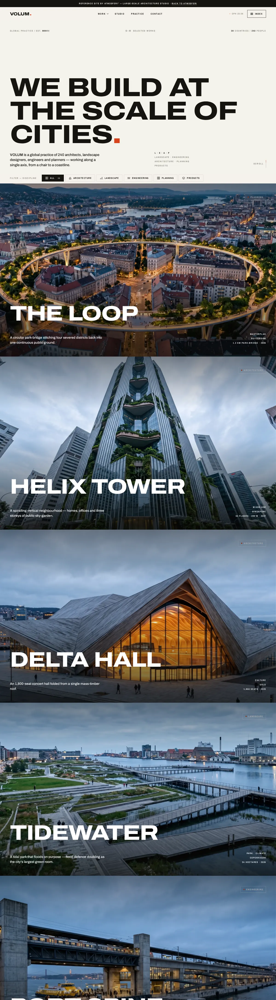

Websites
Websites for architects.
I'm Michal, an architect who designs and builds websites. I help you present your projects clearly, from the images and text to the finished site.
Tell me about itWebsite concepts
A few ways to show your work. Working concepts, each exploring a different way to present architecture.

What I do
From the first image to the finished site.
-
Web design
A considered website that makes your projects easy to browse, with clear navigation and images that have room to breathe.
-
Development
I build the site too. It's fast, works on phones and lets you add projects or change text without needing a developer.
-
3D & visualisation
I can help select and improve your existing images, or create renders, films and 360° tours for projects that aren't built yet.
Films & 360° tours →
Behind the studio
An architect who builds websites.
I trained as an architect and have spent more than a decade making visualisations for architecture studios and developers. That experience helps me choose the right images, organise projects and explain what makes a building interesting.
I design and code the websites myself, so you'll work directly with the person making yours.
Tell me about it